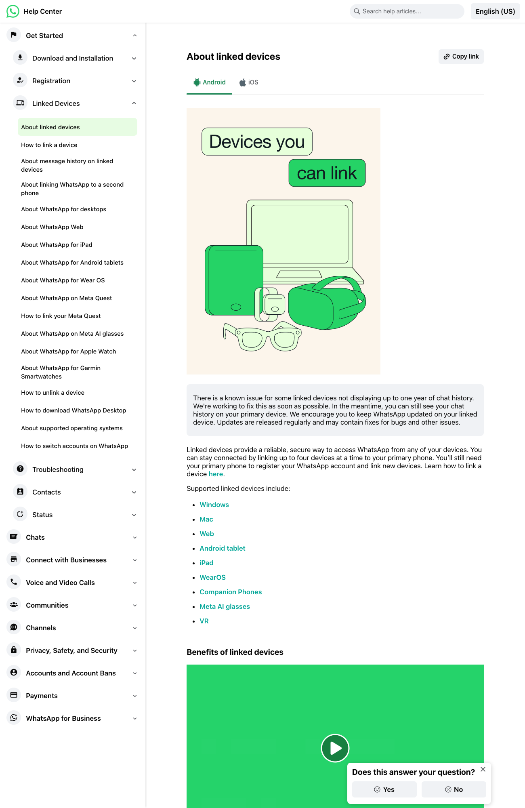
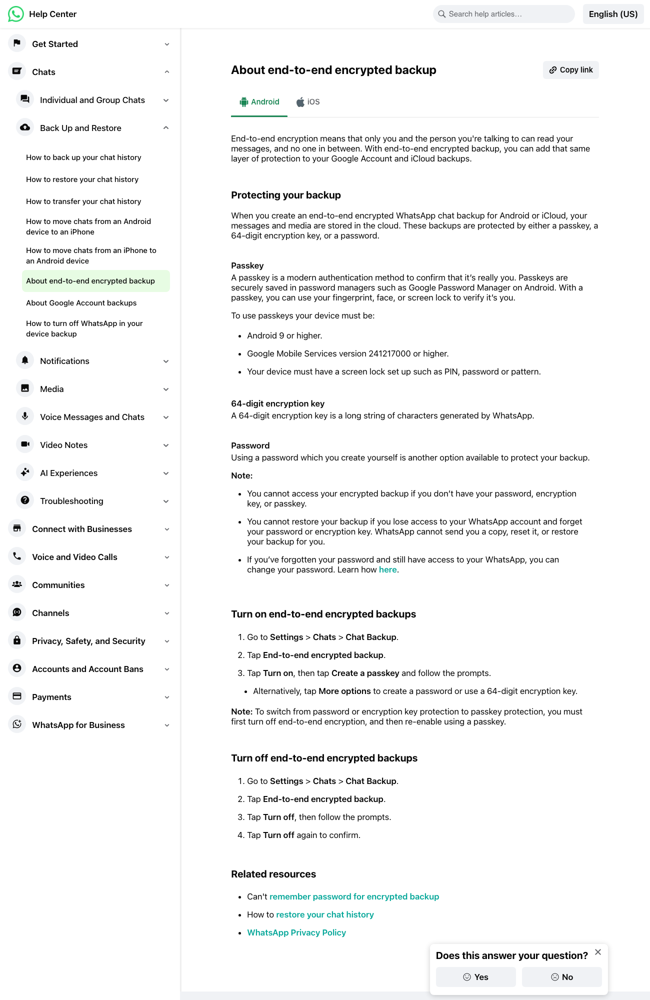
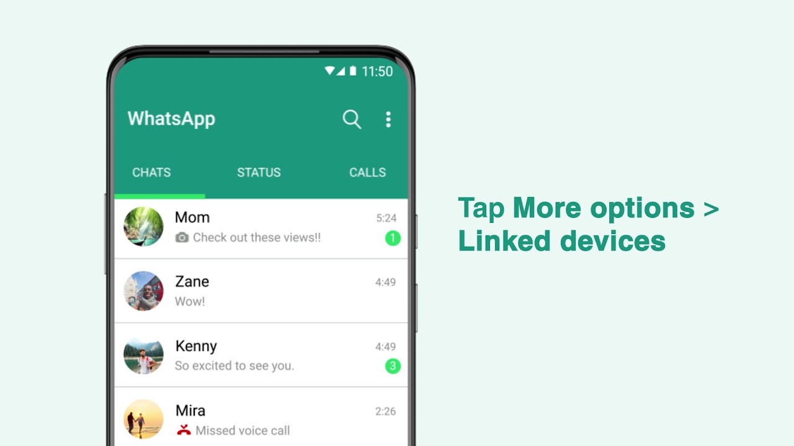

I spent a year as a content strategist writing support content for the WhatsApp Help Center, reaching an audience of 15M people a month across 33 languages. I specialize in making complex processes easy to understand. Here are a few pieces I wrote.

I worked with product managers, video contractors, and localization teams to write this article. Users can learn how to use this feature without opening tickets. Internally, I’m well-versed in content management systems and XML editing.
Read the article →
For these pieces, I worked with the product manager, engineers, and legal teams to precisely describe the technical aspects of how this feature works and deliver accurate instructions. After launch, we consulted our data dashboards to assess CSAT and make content adjustments as needed in response to user feedback.
Read the article →
I worked with a video contractor to script and draft this video to address a recurring ticket need. We developed a simple video to explain this concept and localized it across 33 languages. The video has received 25M views across global markets.
Watch the video →